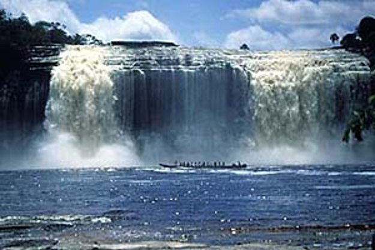

Водоспад — це місце, де вода річки різко падає вниз з обриву чи скельного уступу.
Найвищий водоспад світу — Анхель у Венесуелі, понад 979 м.
В Україні відомий водоспад Пробій у Яремчі.
Водоспади збагачують воду киснем і дають енергію для електростанцій.